In this project, we implemented many aspects of pathtracing/raytracing in order to render images with realistic lighting. In the chronological order of when they were implemented, we wrote code for generating rays, testing ray intersection with scene primitives, boudning volume hierarchy data structure, diffuse BSDF calculations, zero and one-bounce illumination estimations, global illumination, and adaptive sampling.
Part 1: Ray Generation and Intersection
To begin, we generate rays looking from the camera into the world we wish to render with ray tracing. In the camera space, a virtual camera sensor is created as a rectangular plane at Z = -1. This is where our camera captures rays of light coming from the world. To render an image, we need pixel values in the image space. Thus, we transform image position x,y in the normalized image space to the camera space on the sensor.
A ray is drawn from the origin of the camera space outwards through the desired position on the camera sensor. With a transform of rotation and translation based on the camera's position in the world, the ray is transformed from the camera space to the world space, free to intersect with objects that we wish to render. To get a pixel value, random rays distributed over the pixel area are shot out into the world and a Monte Carlo estimate of the radiance is obtained.
The world is composed of triangles and spheres, which make up objects. The ray shot out of the camera can interesct with either of these, or not intersect at all. We detail the implementation of a ray-triangle intersection.
An intersection between a ray and a triangle can be broken down into two parts: testing the intersection with the plane
that the triangle lies on and a test of whether that intersection point is within the triangle. The intersection
time of the ray with a plane is given by t = dot(triangle_point - ray_origin, N) / dot(d,N), where N
is the normal to the triangle, found with a cross product. A value of infinity indicates the plane was never intersected.
Determination of if the intersection point is within the triangle is done through an application of cross products. A vector is drawn from the intersect point to each of the vertices, and cross products are taken between pairs, rotating. If the cross products are in the same direction, then the intersection is within the triangle. An added benefit of this is the easy calculation of barycentric coordinates and a weighted normal vector. Some images with normal shading are shown below.
|
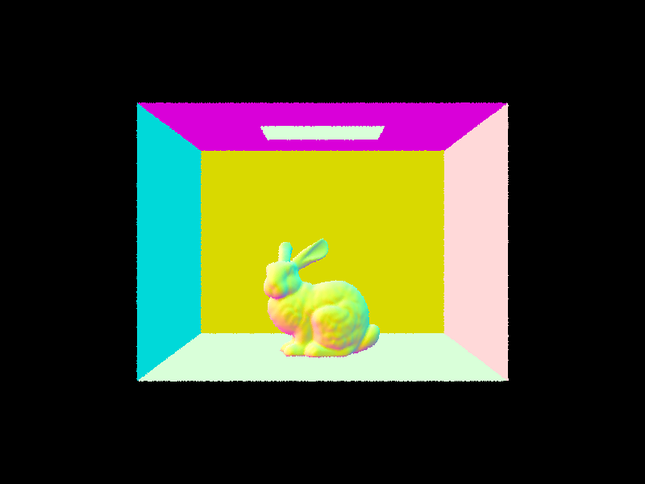
|
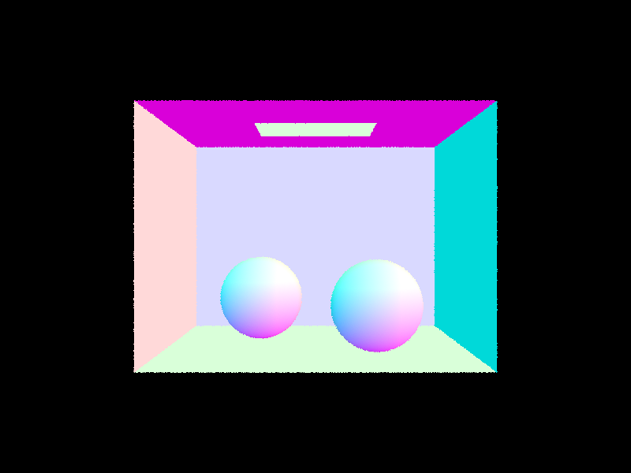
|
Part 2: Bounding Volume Hierarchy
A bounding volume hierarchy (BVH) is a structure used to accelerate the finding of intersections of rays with objects in the world by quickly traversing the scene and ignoring groups of primitives the ray will not intersect. A recursive mentod is used to implement BVH.
The root node has a bounding box enclosing all primitives. The average centroid of the primitives is found, and the variance of the centroid positions in x,y,z is computed. The axis with the largest variance is chosen to split along at the average centroid.
To split the primitives, std::partition is used to reorder the primitives between
start and end iterators based on if the primitive centroid is on the left or right
of the average centroid along the chosen axis. std::partition returns the split position
of the reordered vector. A recursive call is made to create the left child node
construct_bvh(start, split, max_leaf_size) and right child node
construct_bvh(split, end, max_leaf_size). The base case is when the number of primitives falls below the max_leaf_size,
and the node is deemed a leaf node.
Below is a comparison of renderings of a large .dae file of Max Planck. The rendering without BVH acceleration on the left takes over 7 minutes, while the use of BVH acceleration took 0.036 seconds, a 5 order of magnitude difference. The slow rendering is due to testing of intersections of a ray with almost all primitives for each ray. Meanwhile, BVH acceleration performs intersections with bounding boxes and ignores the primitives inside those that don't intersect. Thus the averaged intersection tests per ray are extremely low, making the render very fast.
|
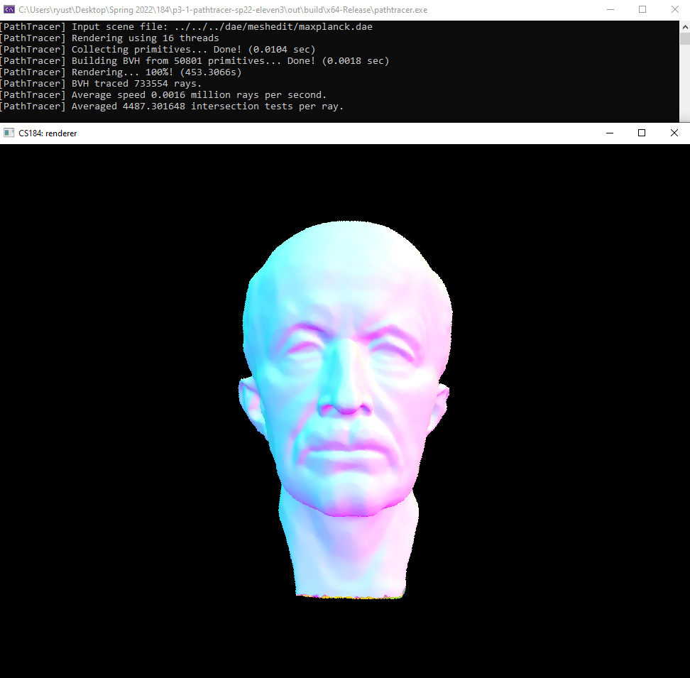
|
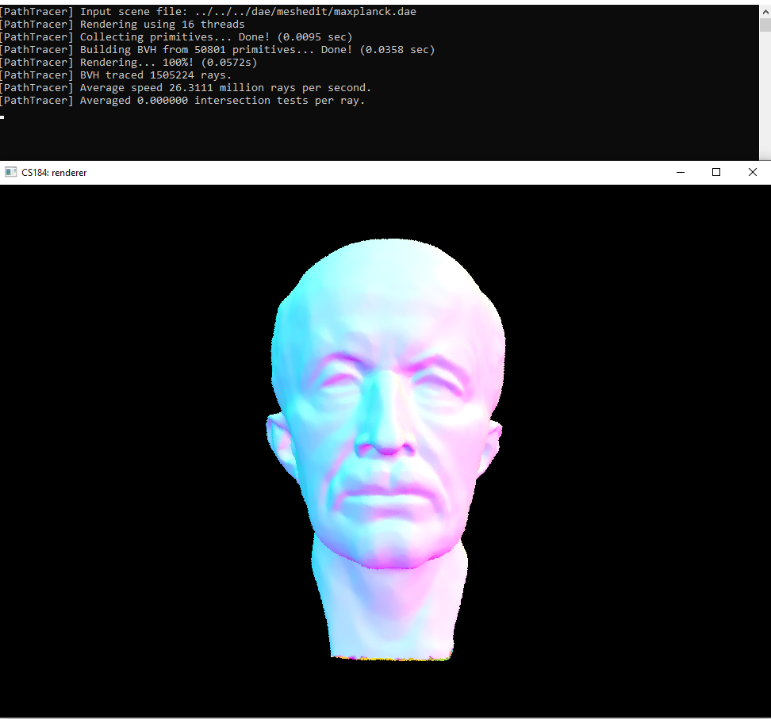
|
|
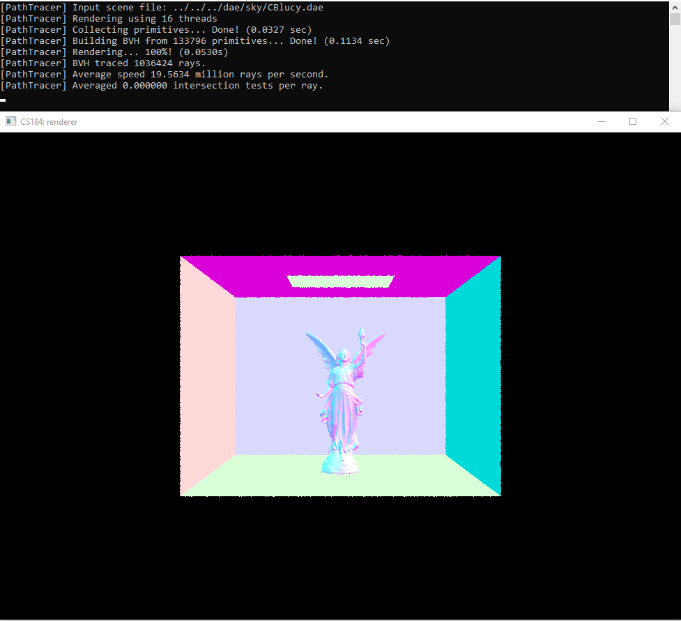
|
Part 3: Direct Illumination
In part 3, we implemented zero-bounce and one-bounce illumination, which estimates the radiance of light rays that either bounce zero times or one time before reaching the camera.
First, we implemented the calculation for the diffuse BSDF. For this specific case of the BSDF, it turns
out that the value of the BSDF does depend on the input and output vectors; rather our function
f always returns the albedo of the surface divided by pi. The function sample_f
similarly returns the same value, but uses the DiffuseBSDF's sample attribute
to sample a random incoming vector.
Afterward, we implemented zero-bounce radiance estimation, which simply consisted of calling
isect.bsdf->get_emission, where isect is the intersection of the ray
from the camera onto an object in the scene.
Lastly, we implemented one-bounce radiance estimation using two methods. The first method was by using
uniform hemisphere sampling to consider the ways the light ray would bounce. The bulk of the logic for this
method of one-bounce radiance estimation was in estimate_direct_lighting_hemisphere.
We used the equation for the Monte Carlo estimation for the reflection equation. As such, we use a
for to iterate num_samples number of times, and, for each iteration, we
sample a new ray using a uniform hemisphere. Then, we check if that new ray has an intersection, and
we add a term using the Monte Carlo estimation equation accordingly. We also had to use the fact that
the pdf for a uniform unit hemisphere is 1/(2*pi) for all points on the hemisphere.
The other method we used to estimate one-bounce radiance is by sampling all of the lights directly using
importance sampling. As such, we use a similar Monte Carlo estimation equation, but, this time, we
iterated through the list of all lights. Then, for each light, we determine whether it was a point light
because, for point lights, we sample once, while, for area lights, we sample ns_area_light
times. Because of this difference in number of times sampled, the point light samples have a coefficient
of ns_area_light times larger than the coefficient in front of each area light sample in our
overall summation. It is also important to note that while iterating over every light source, we check if
a light source is behind the surface at the hit point in question by checking if the input vector wi has
a negative z-axis value in object-coordinates.
Below, we show the CB bunny with importance sampling for l light rays per area light source. We observe that outside the main shadow directly below the head of the bunny, there is a large region of noise for l = 1. This soft shadow gets less noisy as l increases, and for l = 64, converges to the shadow we expect for this scene.
|
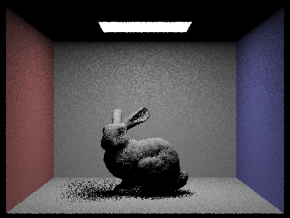
|
|
|
|
|
Below, we compare these two methods of uniform hemisphere sampling and importance sampling. Both images are rendered with 64 samples per pixel and 32 samples per area light. Importance sampling reduces noise that is seen in the left image and converges much faster than uniform hemisphere sampling.
|
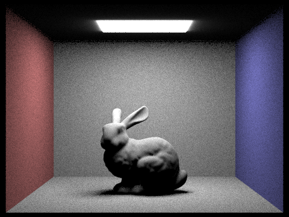
|
|
Part 4: Global Illumination
In part 4, we implemented global illumination, which, in comparison to part 3, accounted for light rays bouncing off of surfaces multiple times.
While the bulk of the logic for this part was in at_least_one_bounce_radiance, the
function est_radiance_global_illumination was updated to call
at_least_one_bounce_radiance correctly, the function raytrace_pixel was
updated to set the depth of each ray to max_ray_depth, and sample_f was
relevant in sampling possible directions of the rays bouncing.
at_least_one_bounce_radiance returns the estimated radiance resulting from rays that
bounced at least once, given an intersection and a ray. This function was implemented recursively,
where the base cases consist of
- if we already made
max_ray_depthrecursive calls - if the input ray does not intersect with the scene
- if we decide to not recursively call based on the Russian Roulette strategy discussed in lecture
sample_f sample a next ray to check, and we set the
depth of that new ray as one less than the current depth.
The below images illustrate the differences between direct and indirect illumination. In particular, we can see that direct illumination accounts for light from the light source while indirect does not. Meanwhile, the indirect illumination accounts for colored shadows unlike direct illumination.
|
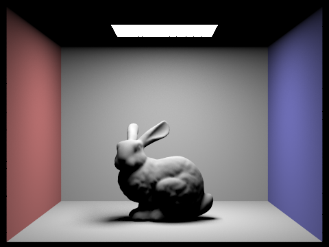
|
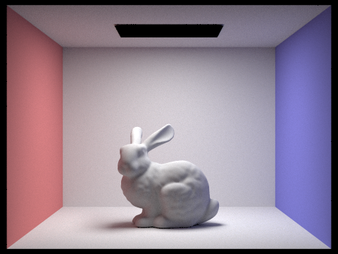
|
The below images show the effect that max_ray_depth, which is set using parameter m, has on images using global illumination.

|
|
|
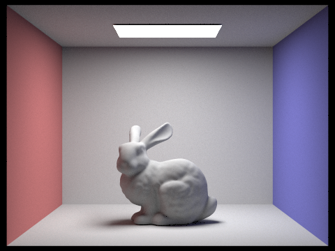
|
|
|
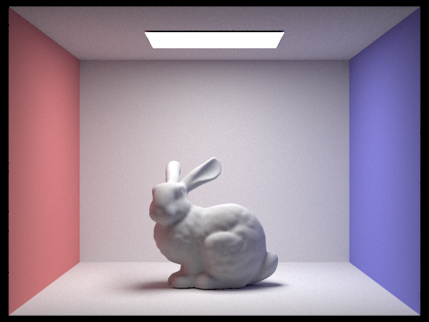
|
As a final image comparison, the below images show how changing the sample-per-pixel rate affects the image.
|
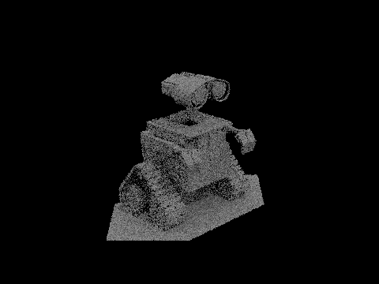
|
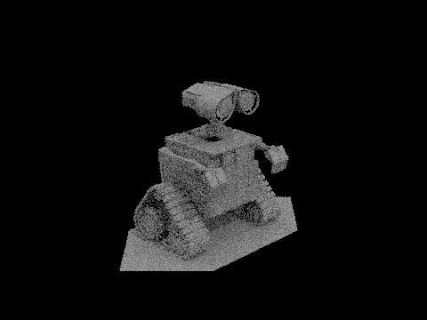
|
|
|
|
|
|
|
|
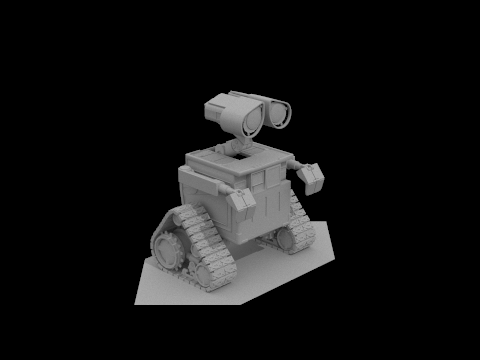
|
Part 5: Adaptive Sampling
In part 5, we implemented adaptive sampling, which allowed us to increase the sampling rate on different pixels only as necessary. This allowed us to reduce noise in our images while being more computationally efficient.
In order to implement adaptive sampling, we modified our original implementation of
raytrace_pixel() from part 1. In the part 1 code, we generated a ray and estimated
the radiance num_samples number of times using a for loop. In order to
implement adaptive sampling for this part, in the for loop, we added a check every
samplesPerBatch iterations which would potentially break out of the loop. We did this
check every samplesPerBatch iteration by checking if the sample number was a multiple
of samplesPerBatch.
The aforementioned check calculated the mean and standard deviation radiance of all the samples so far. Then, we broke out of the loop if
I <= (maxTolerance)(mean)where
I = 1.96 * (standard deviation) / (square root of n)where n is the count of number of samples so far. The mean and standard deviation radiance were calculated more easily by keeping track of the summed radiances and summed squared radiances.
After the loop, we calculated the average radiance by dividing the summed radiances by n,
instead of by num_samples. We filled in the sampleCountBuffer with
n, instead of with num_samples.
The following scene was rendered using adaptive sampling. In the image showing sampling rates, the red color corresponds to pixels that took more samples to render while the blue color corresponds to pixels that took less samples to render.
|
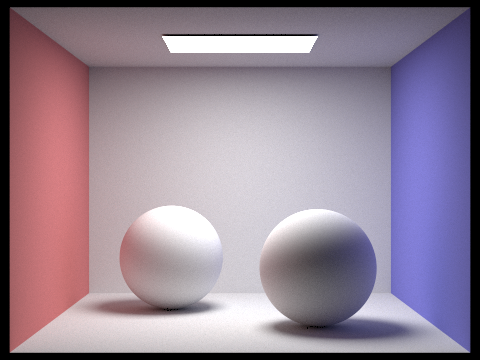
|
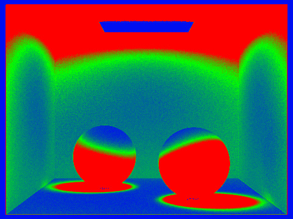
|
We can see that the more shadowy/darker areas of the image tended to require more samples while bright parts, especially the light source, took less samples to raytrace.
Project Partner Collaboration
We (Ryu and Marco) collaborated on this project mostly by working on the tasks separately and in order. When one person would finish a task, the other would look over the code written and ask questions to the first person in order to understand the code fully before picking up from where the first person left off. Using git branches was helpful in keeping different versions of our code recorded and making checkpoints for ourselves. Overall, this type of collaboration has helped us complete the project with less stress while being able to ask each other conceptual questions, helping our understanding of the material.
Github pages link:
https://cal-cs184-student.github.io/sp22-project-webpages-ryusterakiba/proj3-1/index.html